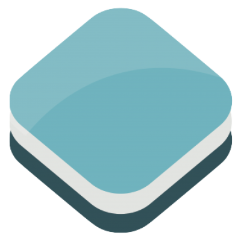

OpenLayers 3
Stand, Neues & Zukünftiges
Marc Jansen, Bart van den Eijnden & Andreas Hocevar
Gliederung
- Über…
- Stand Marc
- Neues Andreas
- Zukünftiges Bart
Marc Jansen


- Seit 2007 Entwickler / Projektleiter bei terrestris
- Seit 2011 Kernentwickler / Committer OpenLayers
- Kernentwickler und PSC Mitglied GeoExt
- Buchautor "OpenLayers"
- OSGeo Foundation Charter Member
Bart van den Eijnden

- Konsulententätigkeit für Boundless seit 2011
- Im Steering Committee des OpenLayers Projektes seit Feb 2015
- OpenLayers Entwickler seit 2009
- Kernentwickler und PSC Mitglied GeoExt
| Marc | Andreas | Bart |
|
|
|
|
|
jansen@ terrestris.de |
ahocevar@ boundlessgeo.com |
bartvde@ boundlessgeo.com |
| @marcjansen | @ahocevar | @bartvde |
| @selectoid | @ahoce | @6artvde |
terrestris
- terrestris.de
- OpenSource GIS aus Bonn
- Entwicklung, Projekte & Support/Schulung
- Beratung, Planung, Implementierung & Wartung
Boundless
- boundlessgeo.com
- Boundless reduziert die Kosten freier Software
- Governance in der FOSSGIS Community
- Vorher bekannt als OpenGeo
Stand
OpenLayers 3
Auf der FOSSGIS 2014 angekündigt
OpenLayers 3 …
…ist da


v3.3.0, 03.03.2015
OpenLayers
- lange Historie
- v2.0.0: August 2006
- sehr bekannt
- weit verbreitet
OpenLayers 3
- Komplettes rewrite-from-scratch
- Bis zur v3.0.0 ca. 2 Jahre Entwicklung
- Google Closure Bibliothek (Gmail, Google Maps)
- Google Closure Compiler
- jsdoc3
- WebGL
- Mobile first / from start
- Styling ausschließlich CSS
Was kann man damit machen?
Einfache interaktive Karten
window.map = new ol.Map({
target: 'trivial-map',
layers: [
new ol.layer.Tile({
source: new ol.source.OSM()
})
],
view: new ol.View({
center: ol.proj.transform([-93.27, 44.98], 'EPSG:4326', 'EPSG:3857'),
zoom: 9
})
});
Komplexe Geoportale
Neues
Änderungen von v3.3.0
- NEU: ArcGIS Rest Tile Layer
- autoPan von Overlays in den sichtbaren Bereich
- WMTS Verbesserungen
- Neue Events für Feature Selection
- Events zur Überwachung des Ladens von Kacheln
// WMTS layer from GetCapabilities response
$.ajax('data/wmts-capabilities.xml').then(function(data) {
map.addLayer(new ol.layer.Tile({
source: new ol.source.WMTS(
ol.source.WMTS.optionsFromCapabilities(
new ol.format.WMTSCapabilities().read(data),
{layer: 'layer-7328', matrixSet: 'EPSG:3857'}))
}));
});// Information about selected and deselected features
selectInteraction.on('select', function(e) {
alert(selectInteraction.getFeatures().getLength() +
' selected features (last operation selected ' +
e.selected.length + ' and deselected ' +
e.deselected.length + ' features)');
});Echtes 3D mit OL3-Cesium
Einbindung von 
Version 1.0.0 finanziert durch Kunden von Boundless
Zusammenarbeit von KlokanTech, Camptocamp und Boundless
Zukünftiges
Release plans
Wir haben jetzt monatliche Releases
3.3.0: 3. März - 3.4.0: Ende März
Die stabile API darf sich bei Nebenversionen nicht ändern
Die instabile API darf geändert werden, aber Hinweise werden zur Verfügung gestellt
Schladming Event
Entwickler Codesprint in Österreich
30. März bis 3. April
Ziele: benutzerfreundlich, Dokumentation, Build-Prozess, API
9 Teilnehmer von 5 Unternehmen
Weitere Informationen hier
Entwicklungsschwerpunkte
WebGL Linien und Flächen
Esri ArcGIS JSON
Esri ArcGIS REST Vektor Services
Raster Reprojektion
Vielen Dank
Fragen & Anmerkungen?
Impressum
- Autoren:
- Marc Jansen, terrestris GmbH & Co. KG, jansen@terrestris.de
- Andreas Hocevar, Boundless, ahocevar@boundlessgeo.com
- Bart van den Eijnden, Boundless, bartvde@boundlessgeo.com
- Lizenz: CC BY-SA 3.0
- Vortragsfolien